空中任务
原页面：Air missions
Air wings can be assigned to various 任务. If no missions are assigned, air wings will remain idle in their air bases. Different missions are available for different plane types.
Mission efficiency
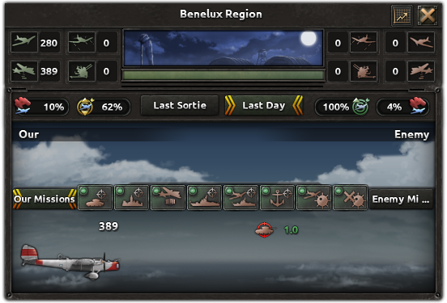
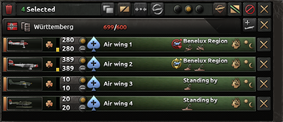
The mission efficiency of a wing influences what percentage of its planes can actually carry out the assigned missions. Note this is different from mission-specific modifiers like 制空权任务效率 described below.
Mission efficiency in a strategic region is shown in the strategic air view window, that is shown if you click a strategic region in the 战略空军地图模式.
Mission efficiency of an 航空队 is shown in the air base view window, that is shown if you click the airfield in which the air wing is stationed.
Mission efficiency icon:
- 红色 icon means mission efficiency < 50%
- 黄色 icon means mission efficiency ≥ 50% and < 100%
- 绿色 icon means mission efficiency = 100%
- Icons with the clock symbol mean that the air wing recently arrived in the region and the mission efficiency is building up.
Effects on mission efficiency of an air wing:
- If the wing's range does not cover the entire strategic region, it will get a range penalty proportional to the provinces that are not covered.
- Airbase overcrowding causes a large penalty.
- Bad 天气 conditions reduce mission efficiency.
- Lack of 燃料 reduces mission efficiency.
- Wings newly assigned to a strategic region get a temporary, decaying penalty to mission efficiency.
Effects on mission efficiency in a strategic region:
- The mission efficiency of the strategic region is the 加权平均 of the mission efficiency of the air wings operating in the region.
 Assigning more ground crews in the 战略空军地图模式 gives a +10%[1] bonus to mission efficiency in the strategic region. This bonus is multiplicative.
Assigning more ground crews in the 战略空军地图模式 gives a +10%[1] bonus to mission efficiency in the strategic region. This bonus is multiplicative.
Missions will be conducted regardless of weather, but bad weather reduces detection and efficiency and increases the risk of an accident at take-off and landing. The effects increase with weather severity, with sandstorms and blizzards being particularly bad. It may be advisable to put air wings on standby during such conditions.
For some mission types, there are modifiers improving their effectiveness which are also called "mission efficiency": 制空权任务效率, 拦截任务效率, 空中支援任务效率, and 海军任务效率. They improve the following stats of aircraft executing the respective mission type:
- 机动性
- 对空攻击
- 对空防御
- Naval Agility
- 对海攻击
护航效率 belongs to the same family of modifiers but has no effect. It should also be noted that these stats do not boost Ground Attack, which means that 空中支援任务效率 does not affect the damage done to land units by planes performing this mission.
Pilot exercises mission
Available for: All planes, except rocket interceptors, transport planes and scout planes.
Pilot exercises can be used to gain experience for the air wing and to gain  空军经验.
You will consume
空军经验.
You will consume  燃料 and increase the risk of air accidents while running pilot exercises.
燃料 and increase the risk of air accidents while running pilot exercises.
Enabling pilot exercises will disable all other missions.
By holding the "shift"-key and clicking pilot exercises, the air wing will exercise until it reaches maximum training experience and then stop automatically. They will automatically stop pilot exercises when fully trained. The  icon will show when this is properly enabled.
icon will show when this is properly enabled.
Air superiority/escort mission
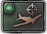
Available for: Fighter, Heavy Fighter, Jet FighterWings with this mission will fight and disrupt any enemy air wings operating in the area. The air superiority mission doubles as escort mission, protecting bombers operating in the region by reducing disruption from enemy fighters.
Close air support mission
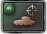
Available for: CAS, Tactical Bomber, Jet Tactical BomberClose air support, also known as 空军支持 or ground support, is the use of aircraft to assist troops in land combat. Wings with this mission will participate in land combat throughout the strategic region. Air support gives an attack bonus to friendly troops and also directly damages organization and strength of enemy divisions.
An air wing can support any land combat in provinces within its range. Combats close to its air base are prioritized as well as (to a lesser extent) battles with more divisions. The priority rating is excess air wing range (in map pixels) plus number of total division on both sides of the battle.
Number of CAS per battle
The maximum number of planes allowed to join a land battle is 3x[2] the used enemy combat width frontage as a base value. The maximum allowed CAS in the battle is adjusted by the type of 地形 in the province where the land battle takes place (see the "enemy air superiority" column). A wing with more planes than can join its highest priority battle can split to join multiple battles. The CAS frontage of a battle can be filled by planes from multiple friendly wings. Thus, there is no need to match CAS wing size with combat widths.
Example: A battle takes place in a  森林 province (-10% enemy air superiority) against a single enemy division with a combat width of 20. This allows 3*20*(1-0.1) = 54 planes on CAS mission to join this battle. CAS wings will contribute planes to the battle up to 54 planes.
森林 province (-10% enemy air superiority) against a single enemy division with a combat width of 20. This allows 3*20*(1-0.1) = 54 planes on CAS mission to join this battle. CAS wings will contribute planes to the battle up to 54 planes.
Attack bonus to friendly land units
CAS provide an attack bonus which boosts the stats of friendly units in the combat. The bonus has a base value of +25%,[3] scaled linearly by the number of planes actually in the battle compared to the maximum possible. For example, in the earlier example with a maximum of 54 CAS, if 27 planes were in the battle, the attack bonus would be +12.5% (27 / 54 * 25%). With 48 CAS present, the bonus would be +22.22%. The air support bonus can be observed in the tooltips that appear when you hover over icons for land units stats shown in the battle display.
CAS damaging enemy units
The attacking planes deal ground attack· number of planes attacks against a randomly selected enemy division.
An ace can increase the amount of attacks, while 天气 might decrease it (stacking multiplicatively).
The attacks are resolved as between land units, but they ignore defense, hardness, and armor.
将领和field marshals can reduce the damage done to their units by enemy CAS with  伪装专家.
Employed 最高统帅部 characters who specialize in Concealment can also reduce the amount of damage inflicted by enemy CAS.
The resulting damage values against organization and strength are scaled by 0.035[4] and 0.035[5], respectively, instead of 0.053[6] organization and 0.06[7] strength as in land combat between divisions.
伪装专家.
Employed 最高统帅部 characters who specialize in Concealment can also reduce the amount of damage inflicted by enemy CAS.
The resulting damage values against organization and strength are scaled by 0.035[4] and 0.035[5], respectively, instead of 0.053[6] organization and 0.06[7] strength as in land combat between divisions.
Enemy units damaging CAS
Divisional anti-air (AA) weapons reduce the damage from CAS. Anti-air capabilities are averaged across all divisions including the reserve. The maximum damage reduction of 75%[8] is already achieved at 4.3[8][9][10] average anti-air attack.
Additionally, the divisional AA (again using the divisions' average) has a 7%[10] chance to shoot down a portion of the attacking planes. When it does, it can shoot down a fraction of attacking planes up to 0.5%[11] × (air attack). The actual amount is a random value up to that portion (i.e. on average half as much) but at least one plane always gets shot down. None of the plane's attributes have an influence on the effectiveness of anti-air.
Example: The enemy side of a battle has four divisions with 1936  支援连防空 (15.2 air attack) and four divisions without any anti-air (0 air attack).
They get attacked by 91 CAS planes every 8[12] hours.
The enemy side's average division air attack is: \frac 15.2· 4+0· 48=7.6.
Averaged over a long time, they will shoot down 7\%· 7.6· \frac 0.5\%2· 91=0.12103 planes every time they are attacked.
支援连防空 (15.2 air attack) and four divisions without any anti-air (0 air attack).
They get attacked by 91 CAS planes every 8[12] hours.
The enemy side's average division air attack is: \frac 15.2· 4+0· 48=7.6.
Averaged over a long time, they will shoot down 7\%· 7.6· \frac 0.5\%2· 91=0.12103 planes every time they are attacked.
空军经验
Every plane that joins a battle produces 0.0005[13]  空军经验.
空军经验.
Interception mission
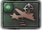
Available for: Fighter, Heavy Fighter, Jet Fighter, Rocket Interceptor.Wings with this mission will only participate in 空战 if enemy bombers, transport planes, or scout planes are detected. They will still engage enemy fighters escorting those planes, but will not contribute to that region's 制空权.
Strategic bombing mission
 Available for: Strategic Bomber, Jet Strategic Bomber, Tactical Bomber, Jet Tactical Bomber.
Available for: Strategic Bomber, Jet Strategic Bomber, Tactical Bomber, Jet Tactical Bomber.
Strategic bombing is the act of damaging enemy buildings, industry, and infrastructure via planes designed to drop bombs. Wings with this
mission can prioritize the type of target (such as airbases, radar installations, forts, infrastructure, etc.) within the strategic region by clicking on the proper button. Note that your bombers may get targeted by  防空.
Strategic bombing damage is about 120 damage per attack cycle for ~0.3 buildings destroyed. This damage appears to be distributed among all the targeted buildings (forts, industry, etc.) in the air region without regard to the number of air wings present. World War II bombers were inaccurate, and therefore the amount of bomb damage varies greatly from day to day.
防空.
Strategic bombing damage is about 120 damage per attack cycle for ~0.3 buildings destroyed. This damage appears to be distributed among all the targeted buildings (forts, industry, etc.) in the air region without regard to the number of air wings present. World War II bombers were inaccurate, and therefore the amount of bomb damage varies greatly from day to day.
Players carrying out strategic bombing should note:
- Strategic bombers are very expensive to construct and in many cases a significant number are required to have any meaningful impact. Carefully consider the opportunity cost of committing many factories to a strategic bombing campaign.
- If the enemy air region is heavily defended with fighters, the bombers may need to be escorted. Only heavy fighters have enough range to escort strategic bombers deep into enemy territory, but they can be beaten by light fighters.
Players subject to strategic bombing can respond in several ways:
.png) 防空 emplacements (built in the 建造 interface or 州 view) will not only destroy the enemy's bombers, but they will also receive some of the bombs (diverting them from the factories, refineries, resources, and naval facilities that the defender needs to protect).
防空 emplacements (built in the 建造 interface or 州 view) will not only destroy the enemy's bombers, but they will also receive some of the bombs (diverting them from the factories, refineries, resources, and naval facilities that the defender needs to protect).- Strategic bombers can be fought in the air by fighters. Heavy fighters are more effective than light fighters in this role. Bombers are much slower and less agile than fighters, so players designing defensive fighters will find guns are most effective. Heavy fighters' larger range also means that they can be used to defend a larger area.
- The
 「建造修复」持续焦点 will speed up the repair of damaged buildings. This will help the region to recover.
「建造修复」持续焦点 will speed up the repair of damaged buildings. This will help the region to recover. - The
 分散工业 technologies reduce factory bombing vulnerability. This can help reduce the amount of damage bombers do specifically to factories.
分散工业 technologies reduce factory bombing vulnerability. This can help reduce the amount of damage bombers do specifically to factories.
Players can assess the impact of their bombing and their defenses in the region's air combat screen (number of buildings bombed, percentage of bombers disrupted). The details pane of that window provides numbers across a long time frame.
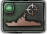
Available for: Naval Bomber, CAS, Tactical Bomber, Jet Tactical BomberWings with this mission target enemy ships, both inside and outside naval battles. They may get targeted by naval anti-air. Air wings have a base 4% chance to detect or find an enemy fleet. This detection percentage is modified by other variables. The mechanics for naval strikes outside naval battles are identical to those within them.
Outside naval battles, naval strikes never attack enemy convoys carrying resources or supplies, though they can attack enemy convoys carrying troops. However, convoys automatically repair between battles, and many aircraft are too weak to sink a convoy in one attack. Only planes using 1940 technology tend to be able to destroy convoys outside naval battles.
The situation is quite different if naval strikes are combined with an attack by warships (including submarines). In this case, resource and supply convoys can also be the target of an aerial attack, and because convoys will not automatically repair until the naval battle is over, more types of aircraft can end up destroying convoys.[14]
Kamikaze strike mission
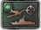
Available for: Fighter (needs to be unlocked by country rule)This mission is equivalent to the naval strike mission, but with increased effectiveness and losses.
Can be unlocked by the following:
Port strike mission
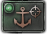
Available for: Naval Bomber, CAS, Tactical Bomber, Jet Tactical BomberA port strike mission is an air attack against enemy ships located in a naval base. Naval bases are located within provinces on land, therefore, port strikes can only take place in a region which covers land. The naval base itself will get damaged as well during successful attacks, but empty bases cannot get attacked.
The "Port strikes" modifier (e.g., from the  基地打击 naval doctrine) affects the naval strike attack stat. Note that air wings on a port strike mission may get targeted by
基地打击 naval doctrine) affects the naval strike attack stat. Note that air wings on a port strike mission may get targeted by  防空.
防空.
Logistics strike mission
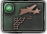
Available for: CAS, Tactical Bomber, Jet Tactical BomberA logistics strike mission is an air attack against enemy trucks, trains and railways.
Air supply mission
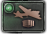
Available for: Transport planeEach transport plane can give up to a maximum of 0.01 supplies, meaning a full wing of 100 can give up to 1 supply under optimal conditions, which are affected by the transport plane's wing experience, existing supply within the province and the airbase where the transport plane wings are stationed, as well as mission efficiency. Therefore, if there's a shortage of supply in the source province, a lack of air superiority, or insufficient range to cover the entire target air region, less supply will be delivered. The total air supply from your transport planes is added to the state supply of the states assigned under the air region where the air supply mission is being executed. More Ground Crews increases the supply amount by 10%.[1]
Command points are automatically used for these missions and costs 0.05[15]
More Ground Crews increases the supply amount by 10%.[1]
Command points are automatically used for these missions and costs 0.05[15]  指挥点数 per plane while the mission is active. Transport planes can be shot down while on the mission, both by enemy fighters on interception missions and by
指挥点数 per plane while the mission is active. Transport planes can be shot down while on the mission, both by enemy fighters on interception missions and by  防空.
防空.
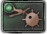
Available for: Naval Bomber, Tactical Bomber, Jet Tactical Bomber, Strategic Bomber, Jet Strategic BomberThe  空中布雷 technology must be researched before aircraft will become capable of air dropping naval mines.
空中布雷 technology must be researched before aircraft will become capable of air dropping naval mines.
Planes capable of naval minelaying can be assigned to naval minelaying missions only during wartime. These planes will continue to air drop mines to the assigned strategic region until 1000[16] mines have been laid in the region, at which point the region is considered to be fully saturated with mines.
The rate of minelaying depends upon both the quantity and type of plane which make up part of the air wings assigned to a region.
As mines are laid, some mines will graphically become visible on the map. While either the strategic air or navy map mode is selected, hovering the cursor over a region containing mines will show the number of mines that have been laid, along with the number of enemy ships damaged or sunk by the mines.
Effects of mines
Minelaying efficiency by plane type
Without  唯有鲜血, certain plane types are inherently better at laying mines than others:
唯有鲜血, certain plane types are inherently better at laying mines than others:
- 5% Naval Bombers.
- 8% Tactical Bombers.
- 8% Jet Tactical Bombers.
- 13% Strategic Bombers.
- 13% Jet Strategic Bombers.
With  唯有鲜血 and its 飞机设计器, the minelaying efficiency of a plane depends on the value of its design's Minelaying stat.
唯有鲜血 and its 飞机设计器, the minelaying efficiency of a plane depends on the value of its design's Minelaying stat.
 Available for: Naval Bomber, Tactical Bomber, Jet Tactical Bomber
Available for: Naval Bomber, Tactical Bomber, Jet Tactical Bomber
The  空中扫雷 technology must be researched before aircraft will become capable of detecting and neutralizing enemy naval mines. Planes capable of naval minesweeping can be assigned to naval minesweeping missions during wartime. These planes will continue removing mines from their assigned strategic region until the region is fully clear of mines.
空中扫雷 technology must be researched before aircraft will become capable of detecting and neutralizing enemy naval mines. Planes capable of naval minesweeping can be assigned to naval minesweeping missions during wartime. These planes will continue removing mines from their assigned strategic region until the region is fully clear of mines.
The rate of mine clearing depends upon both the quantity and type of plane which make up part of the air wings assigned to a region.
Base minesweeping efficiency by plane type
Without  唯有鲜血, certain plane types are inherently better at sweeping mines than others:
唯有鲜血, certain plane types are inherently better at sweeping mines than others:
- 10% Naval Bombers.
- 15% Tactical Bombers.
- 15% Jet Tactical Bombers.
With  唯有鲜血 and its 飞机设计器, the minesweeping efficiency of a plane depends on the value of its design's Minesweeping stat.
唯有鲜血 and its 飞机设计器, the minesweeping efficiency of a plane depends on the value of its design's Minesweeping stat.
Air recon mission
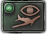
Available for: Scout PlanesAircraft on this mission perform aerial scouting and intel gathering, adding additional intel to the total intel from all sources on the countries in the target air zone. The effects of this are shown in the Intel Ledger in the Diplomacy screen for a country.
制空权
If a country has scout planes in an air zone, they will contribute towards 制空权 in that air zone, even though they will not actively engage enemy targets. If the only planes operating in an air zone are planes on air recon, enemies can potentially identify this from the fact that the zone will report there being no fighters or bombers present, meaning the only possible source of 制空权 in that zone must be from active scout planes.
 Available for Naval Bombers
Available for Naval Bombers
Naval Bombers (Land & Carrier based) perform naval patrol in target sea zone without engaging enemy ships. Will give ships with patrol mission in the same zone a bonus (more air wings gives a higher bonus) to locate enemy ships.
If no ships on patrol the air mission has no effect.
 Available for: Scout Planes
Available for: Scout Planes
Scout Planes on this mission perform aerial scouting in the target sea zone without engaging enemy ships. These planes help friendly task forces patrolling the sea zone to spot enemies.
Multiple missions
Wings with multiple assigned missions will fly exactly one of the selected mission types per mission opportunity. The mission flown will be the first one in priority order, as shown in the left-to-right order of the buttons in the air UI. Mission efficiency bonuses (e.g. from 空军学说) only for that mission type get applied to the wing for that mission.
To perform multiple missions simultaneously, create multiple smaller wings and assign a wing to each individual mission.
Most missions are conditional, in that planes will only fly if there is a known target at the time a wing mission is being chosen. Some missions will always fly. Targets are checked in each of the air zones assigned to the air wing, checking provinces within range of the air wing. If there are no appropriate targets for a mission type, the mission selection process will continue to the next lower priority mission. The first mission with a valid condition is the only mission flown by that air wing during that mission opportunity. Since many of the conditions during play are dynamic, wings may fly different missions at different types, producing multiple types of results. If one of the assigned missions has a condition that's "Always executes", no later mission in the list will ever be executed by that wing.
In the table below, determine the mission that will be flown by a wing with multiple missions selected by reading the missions from the first line downwards, stopping at the first mission where the condition is true.
| 任务 | Condition |
|---|---|
| 飞行员演习 | Always executes |
| 制空权 | Always executes |
| 近距空中支援 | Ground battles are in progress |
| Interception | Enemy bombers are detected in an assigned air zone |
| 战略轰炸 | At least one undamaged building, including state buildings in partially covered states (if any) |
| 对海打击 | Enemy ships are detected |
| 神风攻击 | Enemy ships are detected |
| 港口打击 | Enemy task force in port |
| 后勤打击 | Enemy divisions or air wings are receiving supply from a supply node |
| 空军补给 | At least one friendly division with a non-zero supply consumption is present |
| Naval Minelaying | Always executes |
| Naval Minesweeping | Always executes |
| 空中侦察 | Always executes |
参考资料
- ↑ 1.0 1.1
NDefines.NAir.AIR_MORE_GROUND_CREWS_BOOST = 0.1中的 定义文件。 - ↑
NDefines.NMilitary.LAND_AIR_COMBAT_MAX_PLANES_PER_ENEMY_WIDTH = 3中的 定义文件。 - ↑
NDefines.NMilitary.AIR_SUPPORT_BASE = 0.25中的 定义文件。 - ↑
NDefines.NMilitary.LAND_AIR_COMBAT_ORG_DAMAGE_MODIFIER = 0.035中的 定义文件。 - ↑
NDefines.NMilitary.LAND_AIR_COMBAT_STR_DAMAGE_MODIFIER = 0.035中的 定义文件。 - ↑
NDefines.NMilitary.LAND_COMBAT_ORG_DAMAGE_MODIFIER = 0.053中的 定义文件。 - ↑
NDefines.NMilitary.LAND_COMBAT_STR_DAMAGE_MODIFIER = 0.06中的 定义文件。 - ↑ 8.0 8.1
NDefines.NAir.ANTI_AIR_MAXIMUM_DAMAGE_REDUCTION_FACTOR = 0.75中的 定义文件。 - ↑
NDefines.NAir.ANTI_AIR_ATTACK_TO_DAMAGE_REDUCTION_FACTOR = 2.5中的 定义文件。 - ↑ 10.0 10.1
NDefines.NMilitary.ANTI_AIR_TARGETTING_TO_CHANCE = 0.07中的 定义文件。 - ↑
NDefines.NMilitary.ANTI_AIR_ATTACK_TO_AMOUNT = 0.005中的 定义文件。 - ↑
NDefines.NAir.HOURS_DELAY_AFTER_EACH_COMBAT = 4in 定义文件, doubled because of roundtrip. - ↑
NDefines.NAir.CLOSE_AIR_SUPPORT_EXPERIENCE_SCALE = 0.0005中的 定义文件。 - ↑ Source: A forum discussion on the effectiveness of naval bombers against convoys in patch 1.4.2.
- ↑
NDefines.NAir.MISSION_COMMAND_POWER_COSTS[11] = 0.05中的 定义文件。 - ↑
NDefines.NNavy.NAVAL_MINES_IN_REGION_MAX = 1000中的 定义文件。